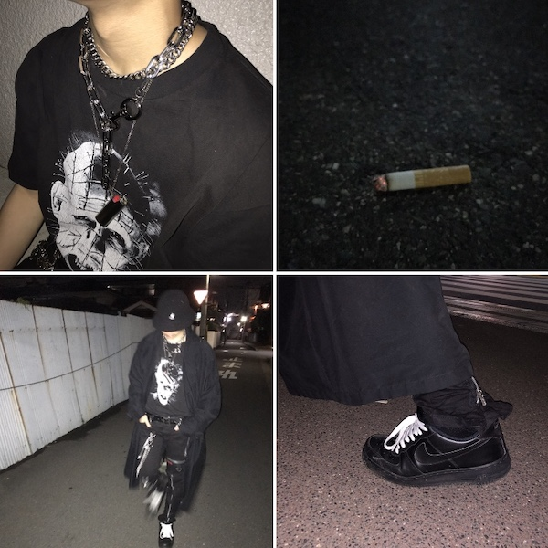

ソフトウェアネットワーク演習Ⅰ
Session:1
課題：Photoshopでトップページ画像を作成する
手順
- 素材となる画像をiphoneにて撮影。 
- 撮影した写真をAirdropでMacに取り込む。
- Photoshopにて使用する画像を別タブで開く。
- それぞれの画像に最適なフィルターをかける。
- 背景となる画像の上に縮小した別の画像をはる。
- テキストを「osaka」「midnight」「youth」と分けて入力。
フォントを指定し、形状・サイズ・位置を調整。
変更点
- フォント:Helvetica neue Bold
- 効果:ドロップシャドウ
- フォントサイズ(中段:155.23pt 上下:79.85pt)
- トラッキング:400%
- 垂直比率:60%
- 全体のバランスを確認し完成。